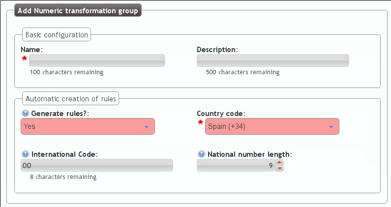
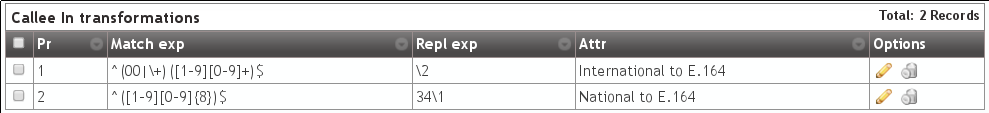
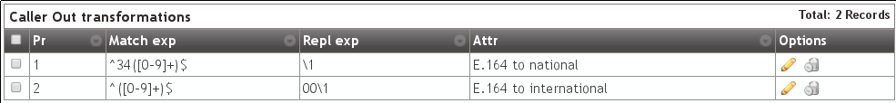

Numeric transformations¶
Concept¶
IvozProvider is designed to provide service anywhere in the planet, not only the original country where the platform is installed.
A very important contept to archive this goal is the numeric transformation, that adapts the different number format systems of the countries of the world defined in E.164 to a neutral format.
The section that allows the brand operator to configure all the numeric transformations is:

There are two different transformation scenarios:
Incoming transformations¶
When a new call is received in IvozProvider matching a provider that has been configured for peering, we must adapt the numbers that make reference to:
- Origin of the call
- Destination of the call
Depending on the country of the provider, the international numbers will have a format or another. In this case, the spanish provider will use, for example:
- 00 + 33 + number belonging to France
- It’s possible that the international numbers came without the 00 code.
- It’s possible that, if the call comes from the same country that the provider, the number comes without the calling code (911234567 insted of 00 + 34 + 911234567 for Spain).
For an Ukranian provider, that doesn’t use the 00 as international code:
- It will use 810 + 33 + number belonging to France.
- It’s possible that even part of the internation code (00 in most of the countries of the world) the provider use specific codes as prefix.
The goal of the incoming transformation is that, no matter what numeric system the provider uses, the number will end in a general and common format.
Important
This common format is usually called E.164 and shows the numbers without internation code, but with country calling code: i.e. 34911234567
Outgoing transformations¶
In the same whay the origin and destination must adaptat incoming numbers, it will be required to adapt outgoing dialed numbers to properly work with each of the providers that will route our call.
For example, for a number with spanish number system:
- Spanish provider: Destination will come in E164 (34911234567) and for this provider, we can remove the calling code (will understand it belongs to its country), so the number sent to them will be 911234567.
- French provider: The destination will come in E164 (34911234567) and we must add the international code for France, so the number sent to them will be 0034911234567.
Note
To sum up, we aim to send the origin and destination in the format the provider is expecting.
Tip
Numeric transformation uses simple regular expresions to describe the changes done to the numbers. You can find multiple tutorials on net with the basic regular expression format.
‘National provider’ transformations¶
IvozProvider comes with an automatic transformation rules generator that fits with most of the countries.
In order to create a new set of transformations for spanish provider:
The rules that has been auto-created will transform the numbers for spanish providers that follow this rules:
- A spanish number: Neither international nor calling code (34).
- Not a spanish number: International code (00) and calling code (34).
The numeric transformation sets must be assigned to Peering Contracts, as shown in the following section. This set can be shared by multiple spanish providers.
Let’s check this set to understand what transformation rule does:

Attention
The automatic rule generation will create 8 common rules based on the given parameters. This rules can be edited later to match the provider requirements.
Spanish incoming transformation¶
Displayed in blue in the previous image:
- Left called/destination
- Right callee/origin
The same rules will be applied for the origin and destination:
The metric field will be used to order the rules (smaller first).
- If a rule doesnt match, the next rule is evaluated.
- If a rule matches, no more rules are evaluated.
- If no rule matches, no change is applied.
The Search field is evaluated agains the number (depending of the tranformation type it will be destination or origin).
- Metric 1: Starting with (^) 00 or ‘+’, followed by a digit between 1 and 9 and only digits between 0 and 9 until the end ($).
- Metric 2: Starting with a digit bewteen 1 and 9, followed by eight digits between 0 and 9 until the end($).
The Replace field will use the capture groups that matched the Search field (displayed between brackets, 1 for the first one, 2 for the second one, and so on) to determine how the number will end.
- Metric 1: The number will be converted just to the second capture (2)
- Metric 2: The number will be converted to the first capture with 34 prefix
Or in other words:
- Metric 1: Strip the international code (00 or ‘+’)
- Metric 2: Add 34 to spanish numbers that comes without calling code.
Spanish outgoing transformation¶
Following the same logic, this 2 rules make the change of the outgoig external destination numbers:
- Metric 1: If the number starts with 34 prefix, remove it. This converts E.164 spanish numbers to national format.
- Metric 2: If the number doesn’t start with 34 prefix, add 00. This converts E.164 international numbers to spanish international numbers.
Attention
To sum up: numeric tranformation can adapt origin and destination numbers to E.164 for the platform, and to providers expected formats, based on regular expresions and metric that can be grouped in sets to be shared between multiple Peering Contracts.